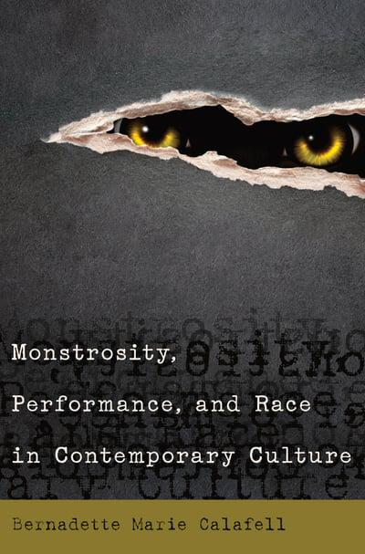

Books
Negotiating Identity & Transnationalism
Haneen Shafeeq Ghabra (Editor), Fatima Zahrae Chrifi Alaoui (Editor),
Shadee Abdi (Editor), Bernadette Marie Calafell
(Editor)
Publisher Info
Purchase Book
Monstrosity, Performance, and Race in Contemporary
Culture
Bernadette Marie Calafell (Author)

Publisher Info
Purchase Book
Queer Intercultural Communication: The Intersectional Politics of
Belonging in and across Differences
Shinsuke Eguchi (Editor), Bernadette Calafell
(Editor)
Publisher Info
Purchase
Latina/o Discourse in Vernacular Spaces: Somos de Una Voz? (Race,
Rites, and Rhetoric: Colors, Cultures, and
Communication)
Michelle A. Holling (Editor), Bernadette M. Calafell (Editor), 13
contributors
Publisher Info
Purchase Book
Latina/o Communication Studies: Theorizing Performance (Critical
Intercultural Communication Studies)
Bernadette Marie Calalfell (Author)
Publisher Info
Purchase Book